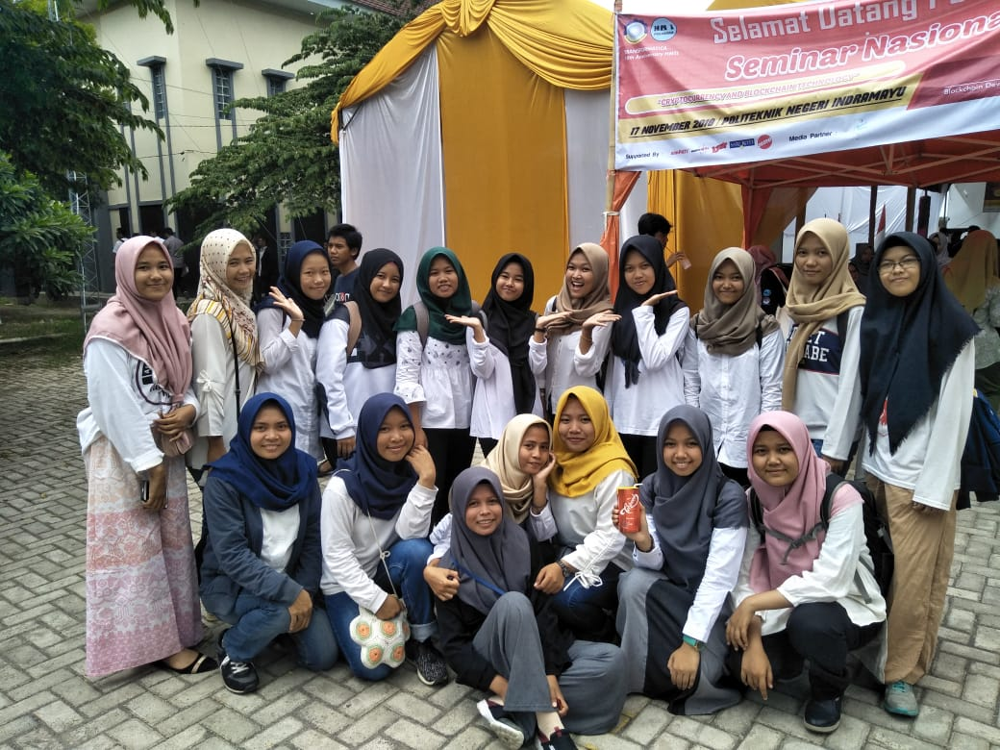

Mahasiswa Berprestasi Berhasil Meraih Juara 3, Lomba Kontes Majalah Kampus Tingkat Nasional
Hari Batik Nasional, jatuh pada tanggal 02 Oktober setiap tahunnya. Hari Batik merupakan salah satu momentum yang baik untuk lebih mengenal dan mencintai budaya bangsa Indonesia, salah satunya Batik. Euforia hari batik juga sampai kepada seluruh masyarakat Politeknik Negeri Indramayu yang mengenakan Batik di hari batik 02 Oktober lalu. Antusiasme menggunakan batik cukup tinggi dikalangan Mahasiswa Politekniik Negeri Indramayu. Selain untuk mengenal budaya bangsa, hari batik ini juga di manfaatkan untuk berfoto bersama dengan teman sekelas dan membuat video bersama juga. Semoga Antusiasme Bangsa Indonesia untuk mengenakan Batik bukan hanya dihari batik saja. Tapi dihari-hari biasa lainnya juga. Aku Cinta Batik, Aku Cinta Indonesia. Bhinneka Tunggal Ika. Meskipun berbeda-beda, tetapi tetap satu.
Tim Good People Politeknik Negeri Indramayu, Berhasil Membawa Medali Perunggu Pada Ajang KMIPN 2019
 Hari batik ini juga di manfaatkan untuk berfoto bersama dengan teman sekelas dan membuat video bersama juga.Semoga Antusiasme Bangsa Indonesia untuk mengenakan Batik bukan hanya dihari batik saja. Tapi dihari-hari biasa lainnya juga. Aku Cinta Batik, Aku Cinta Indonesia.
Mahasiswa Dan Dosen Politeknik Negeri Indramayu, Kompak Kenakan Batik Dalam Rangka Memperingati Hari Batik Nasional 2 Oktober 2019
Hari Batik Nasional, jatuh pada tanggal 02 Oktober setiap tahunnya. Hari Batik merupakan salah satu momentum yang baik untuk lebih mengenal dan mencintai budaya bangsa Indonesia, salah satunya Batik. Euforia hari batik juga sampai kepada seluruh masyarakat Politeknik Negeri Indramayu yang mengenakan Batik di hari batik 02 Oktober lalu. Antusiasme menggunakan batik cukup tinggi dikalangan Mahasiswa Politekniik Negeri Indramayu. Selain untuk mengenal budaya bangsa, hari batik ini juga di manfaatkan untuk berfoto bersama dengan teman sekelas dan membuat video bersama juga. Semoga Antusiasme Bangsa Indonesia untuk mengenakan Batik bukan hanya dihari batik saja. Tapi dihari-hari biasa lainnya juga. Aku Cinta Batik. Aku Cinta Indonesia
 TEKNIK INFORMATIKA
TEKNIK INFORMATIKA